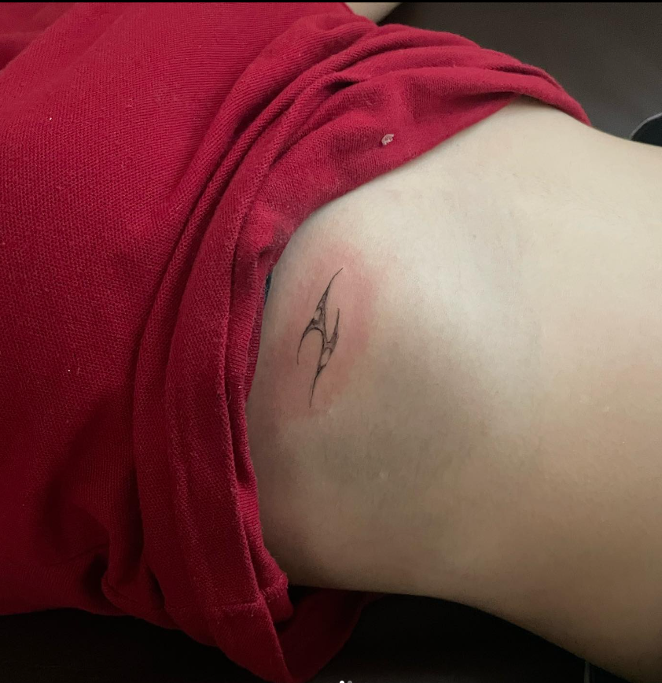
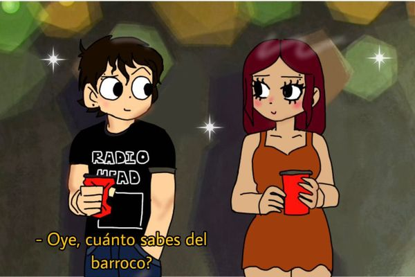
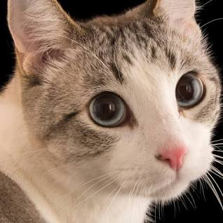
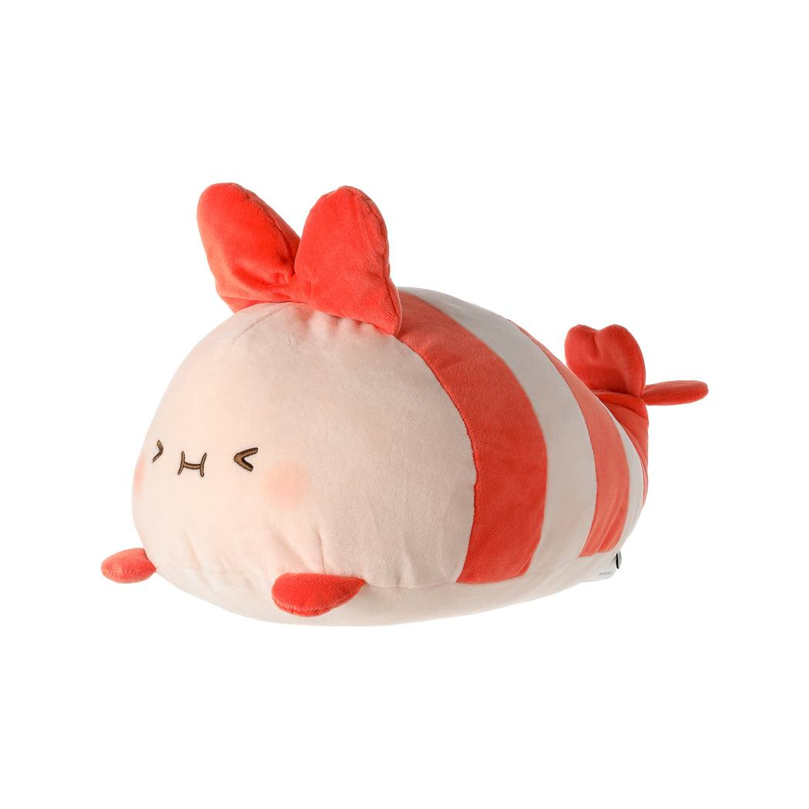

Gustos de ameli
Le gusta mucho tatuar, es una pasion que tiene y de verdada que lo hace
bastante bien, es un talento

hello kity
Tiene un fanatismo hacia hello kity, le encanta hasta ve su series a veces
es una CHIKA KITY

Maquillarse
Es una chica le apasiona el maquillaje, el que base usara, que tipo de delienado
usara, de que color, en fin toda una artista

dibuajr
a esta pricesa le encanta dibujar, es una gran artista, es increible lo que puede lograr
con sus propias manos. simplemente una gran artista
\
Gatos
le encantan los gatos, desgraciadamente no puede tener uno en su casa, pero creanme es un amante de los gatos

camarones :/
\
como toda persona tiene sus defectos, y uno de estos es que ama a los camarones
tiene un peluche en su casa de camaron que amas mas que a su propio novio
simplemente increible lo dejo a su criterio.

GRACIAS
Cosas que le gustan a Ameli
En esta sección encontrarás información sobre las cosas que le gustan a Ameli.